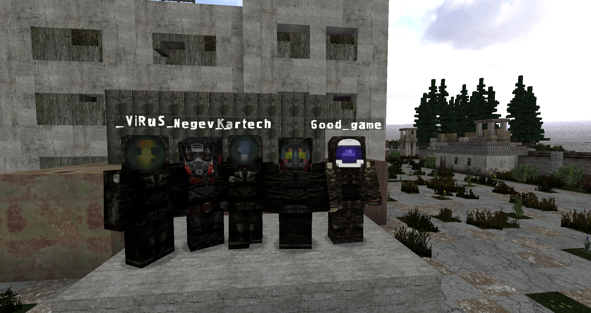
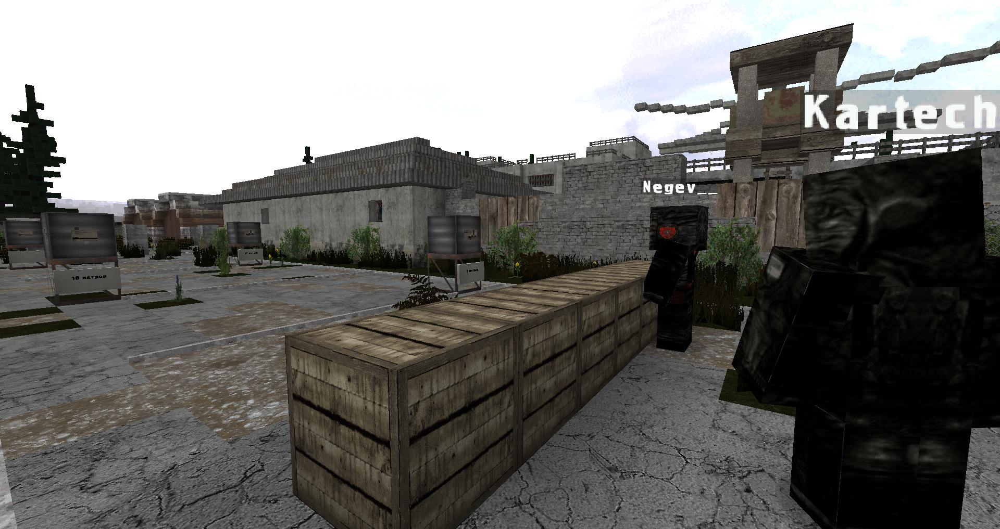
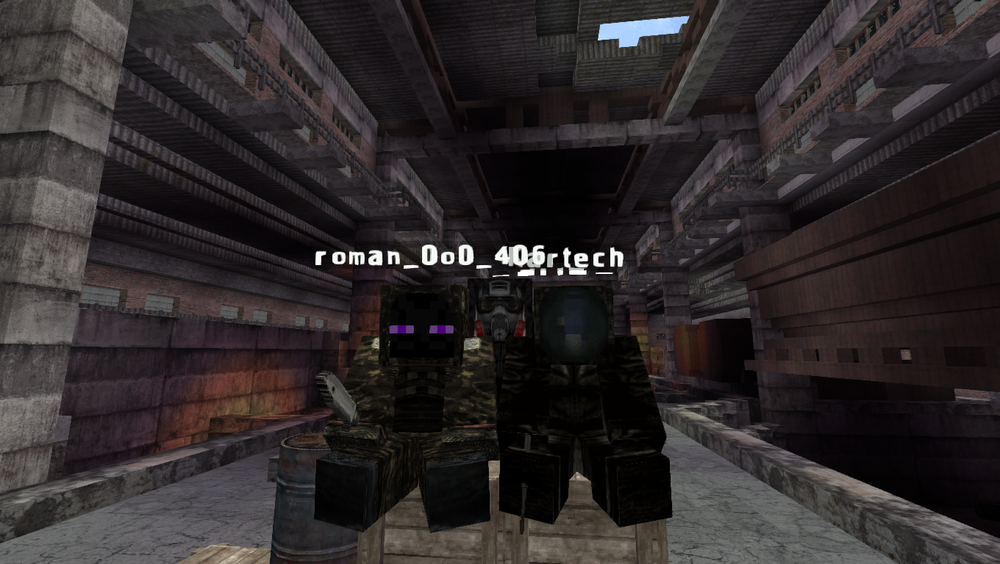
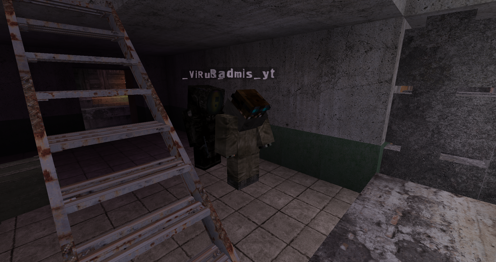

Впервые упоминания о группировке "Долг" появились в 2008 году, после того как стало известно о дезертирстве военнослужащего капитана по фамилии Таченко. Было известно, что вместе с ним дезертировали некоторые товарищи по службе, а так же приближенные. Неизвестна была лишь причина такого поступка, но судя по всему после увиденных ужасов во время службы на территории Зоны отчуждения капитан решил начать свою собственную борьбу с отродьем, которое зверствует в Чернобыле. Изначально "Долг" был малочисленной групппировкой, ведь состоял только из дезертиров вооружённых сил Украины и некоторых сталкеров, которые тоже решили помочь в уничтожении мутантов и разгадок всех тайн Зоны. Тем не менее идеология в группировке была ничем не хуже армейской.
Под командованием уже генерала Таченко "Долг" постепенно рос в размерах и даже обзавёлся собственной базой на НИИ Агропром с которой они всё время делали рейды на логова мутантов. Впрочем не только "Долг" занимался искоренением мутантов, а также одиночки, которые расположились рядом. "Долг" помогал сталкерам и оплачивал их труды, а те в свою очередь очищали локацию от опасных монстров. В 2009 году генерал Таченко собрал отряд бойцов для важной миссии и самолично отправился вместе с ними временно назначив на место лидера генерала Крылова. Крылов продолжил дело Таченко, активно сотрудничал со сталкерами, а так же с СБУ, уничтожал логова мутантов и боролся с другими опасностями включая недавно возникшую группировку "Свобода". С момента пропажи отряда Таченко прошло 2 года и их уже объявили погибшими, а Крылов стал не временным, а постоянным лидером "Долга". В это время началась активная война группировок, в которой "Долг" тоже учавствовал. В период войны "Долг" смог захватить подходы к Агропрому со Свалки, а так же найти дорогу к городу Лиманск.
После Большого выброса 2011 года генерал Крылов принял решение менять главную базу "Долга" и вместе со всей группировкой покинул НИИ Агропром перейдя на завод "Росток", где распологался самый известный в зоне бар "100 Рентген". По неизвестным причинам лидер "Долга" погиб при переходе на завод, а его место занял единственный его доверенный человек - генерал Воронин.
При Воронине "Долг" закрепился на заводе тщательно, однако сотрудничество со сталкерами было прекращено. Бар стал местом в первую очередь "Долга". Это время большинство долговцев считаю худшим для своей группировки, так как взяточничество активно возрастало, а законы созданные Таченко потеряли свою актуальность. Подобное продолжалось больше года, пока Воронин наконец не ушёл в отставку.
В 2013 бремя правления группировкой на себя взял новый лидер, маршал Кравченко, который вернул старые правила и запретил коррупцию. Завод "Росток" стал снова открытой для всех территорией. Сотрудничество с одиночками снова возродилось, а территории группировки постепенно расти. Помимо этого была изменена ранговая система, а генерал Таченко получил орден героя "Долга" посмертно.
Из личного дела полковника Калибра:
"Картечь смог отличиться хорошими результатами в карательных операциях ближе к центру Зоны и после того, как генерал Воронин ушёл в отставку, был избран лидером группировки вместо него. Чернов был назначен Генералом-Главнокомандующим за свои заслуги в сфере управления отрядами. Вся ранговая система была переписана заново, так же как и правила, сотрудничество с одиночками было возобновлено, а коррупция и расстрелы полностью убраны."



